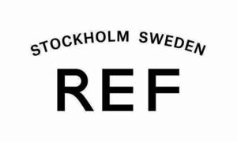

Trade Mark Journal No.2025/047 21 November 2025
WO0000001881567 (3)
Office of origin: European Union Intellectual Property Office (EUIPO)
Date of International Registration:21 May 2025
Date of designation in the UK:
21 May 2025

International priority date claimed: 21 November 2024
(European Union Intellectual Property Office (EUIPO))
(019109178)
- Class 3
- Hair preparations and treatments; after-shave preparations; face packs; face creams for cosmetic use; face oils; facial preparations; face powder; facial washes [cosmetic]; facial wipes impregnated with cosmetics; facial concealer; anti-perspirant deodorants; anti-wrinkle cream; aromatic essential oils; aromatic oils; aromatherapy preparations; make-up removing preparations; baby lotions; baby oils; baby powder; baby shampoo; bath and shower preparations; bath pearls; bath lotion; bath salts; bath foam; bath soap; baby bottom balm; hair balm; conditioners in the form of sprays for the scalp; blemish balm creams; hair bleaching preparations; body mist; eye make-up remover; sun-tanning preparations [cosmetics]; concealers; fragrances for personal use; shower and bath gel; shower creams; eau de cologne; eau de parfum; toilet water; sun-tanning gels; after-sun preparations for cosmetic use; eyeliner; make-up base; adhesives for false eyelashes, hair and nails; false nails; makeup setting sprays; liquid eyeliners; liquid foundation; cream soaps; pre-moistened cosmetic wipes; nail strengtheners; foot masks for skin care; styling lotions; styling gels; hair styling waxes; hair moisturising conditioners; anti-aging moisturizers used as cosmetics; after sun moisturisers; skin moisturisers; moisturising creams, lotions and gels; shaving gel; gels for fixing hair; gel sprays being styling aids; nail polish base coat; hand and body butter; hand creams; hand lotions; hand soaps; hair treatment preparations; hair preservation treatments for cosmetic use; depilatory preparations; hair dyeing preparations; hair fixers; hair glaze; hair lotions; hair mascara; hair mousse; oils for hair conditioning; hair perming treatments; hair pomades; hair powder; shampoos; hair serums; hair protection gels; hair protection creams; hair protection lotions; hair protection mousse; hair spray; hair strengthening treatment lotions; hair texturizers; hair tonic; skin cream; skin cleansers; skin care preparations; anti-aging skincare preparations; non-medicated cosmetics; non-medicated preparations for the relief of sunburn; non-medicated lip care preparations; non-medicated beauty preparations; hair masks; cold waving solutions; artificial nails for cosmetic purposes; cosmetics and cosmetic preparations; body and facial creams [cosmetics]; cosmetic hair dressing preparations; cosmetic preparations for the hair and scalp; cosmetic sun-protecting preparations; lip conditioners; lip glosses; lip cream; lipsticks; false eyelashes; make-up for the face; mascara; hair frosts; dandruff shampoo; emollient shampoos; moustache wax; nail varnish; nail varnish removers; nail care preparations; hair nourishers; night cream; neutralizers for permanent waving; neutralizing hair preparations; eyebrow colors in the form of pencils and powders; eyelashes; perfumes; scented body spray; pedicure preparations; facial peel preparations for cosmetic use; facial care preparations; pre-shaving preparations; preparations for protecting coloured hair; preparations for setting hair; permanent waving and curling preparations; hair tinting preparations; hair straightening preparations; shaving preparations; shampoos for pets [non-medicated grooming preparations]; beard dyes; make-up preparations for the face and body; baby suncreams; sun-tanning creams and lotions; sunblock; hair rinses [shampoo-conditioners]; dry shampoos; make-up foundations; waterproof sunscreen.
REF Group AB
Representative: Bjerkén Hynell Kommanditbolag, Box 1061, SE-111 28 Stockholm, SWEDEN